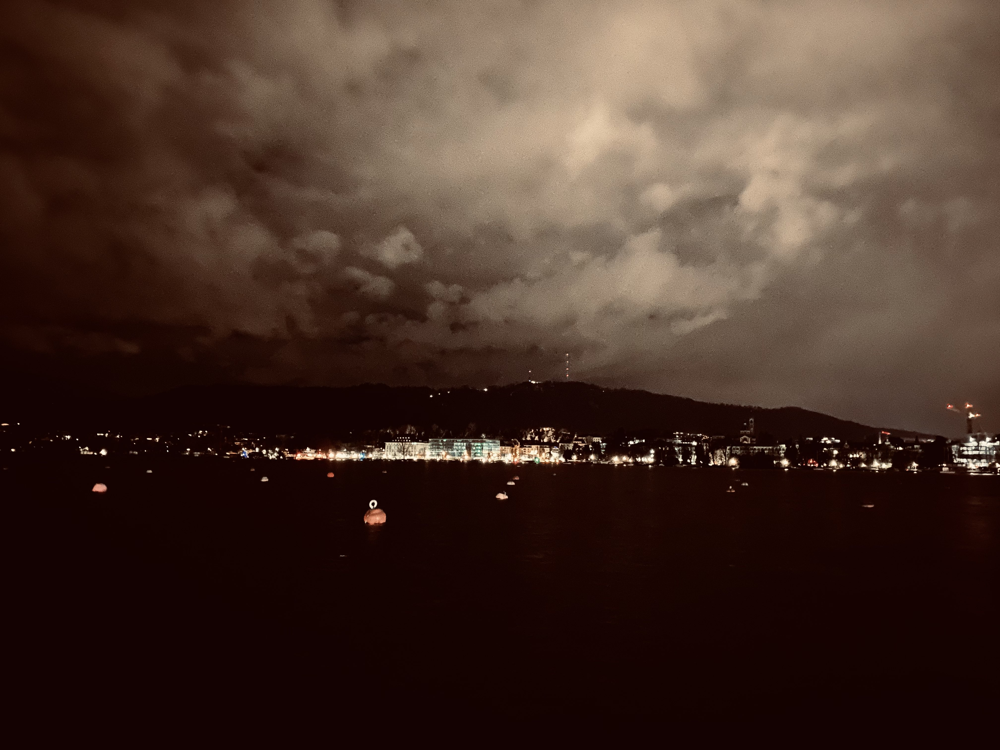
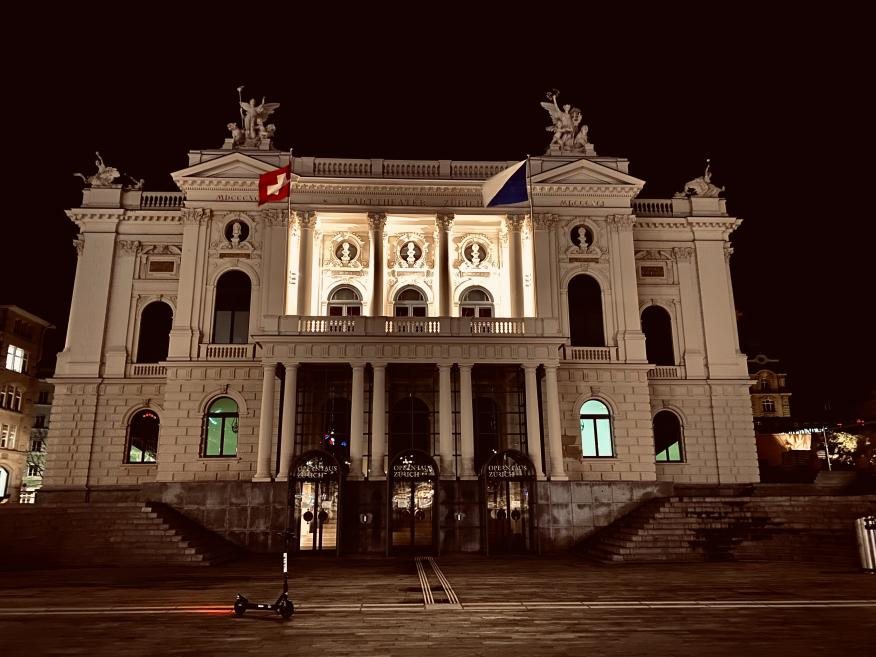
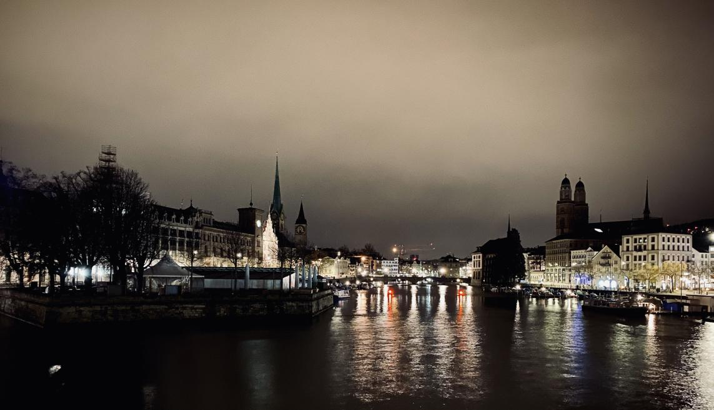
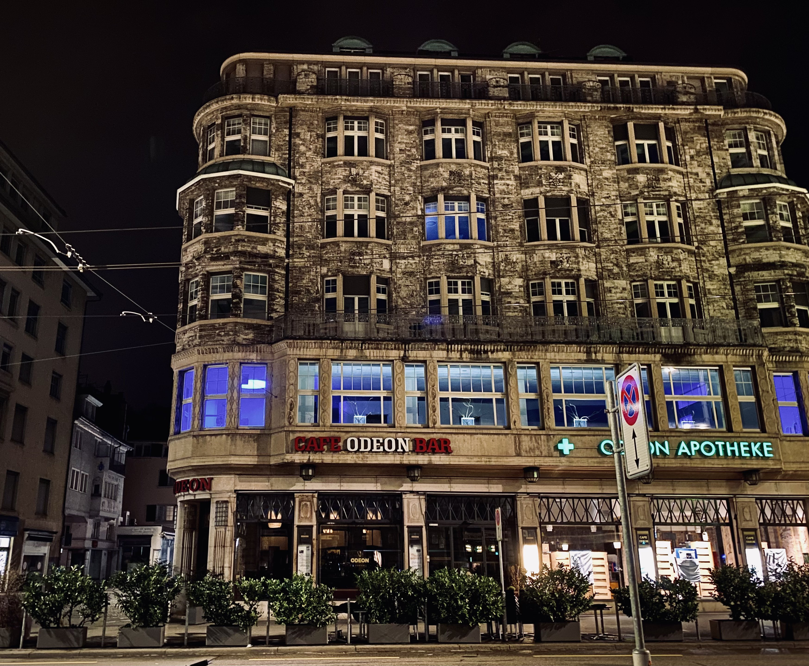
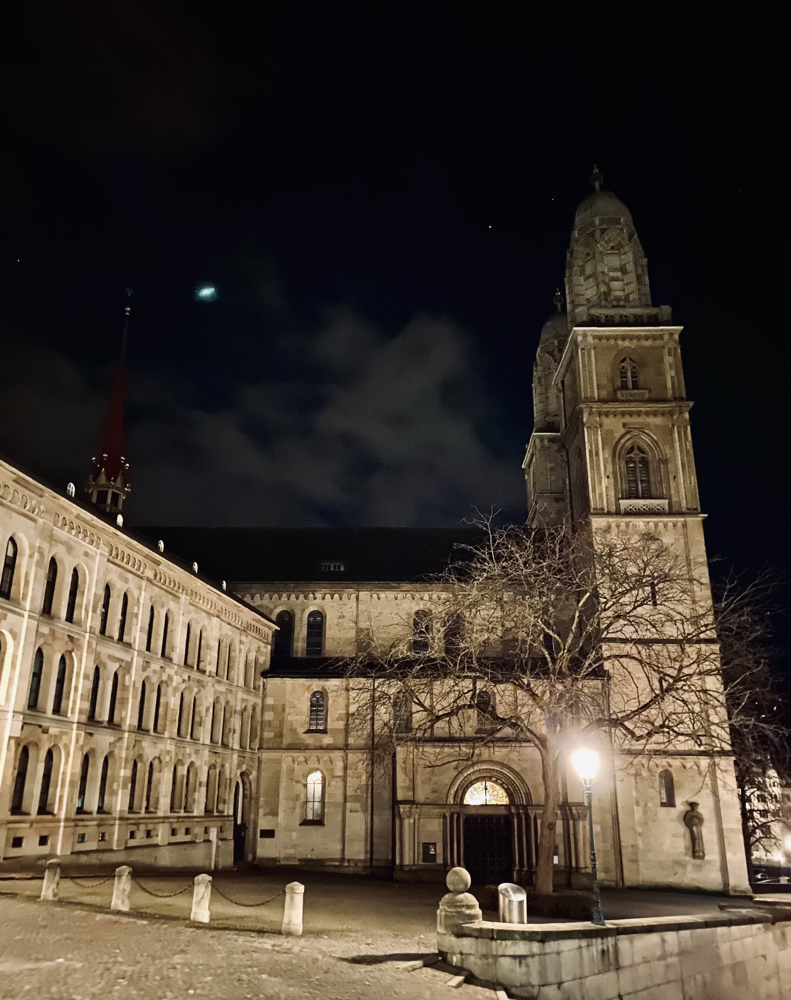
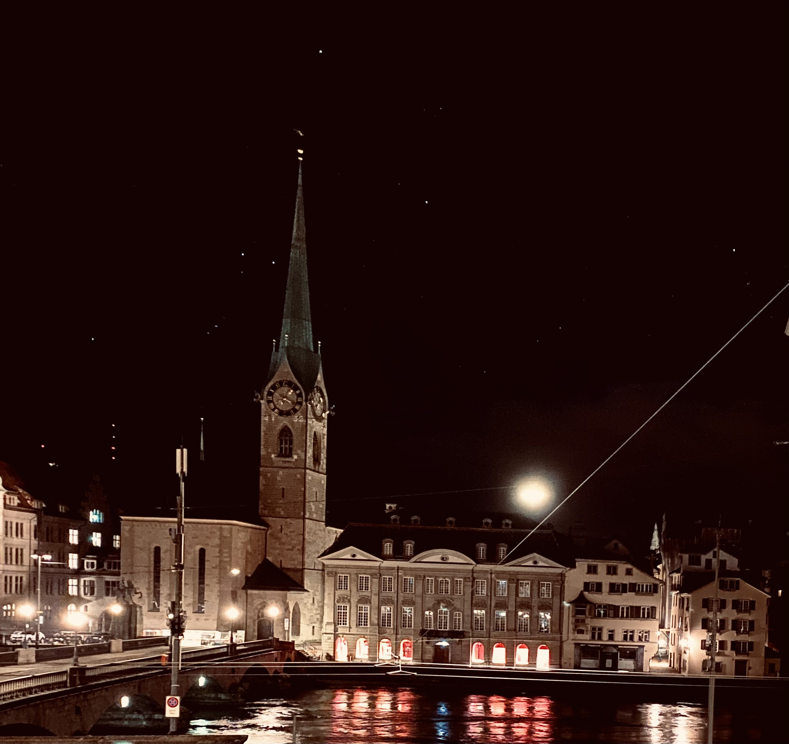
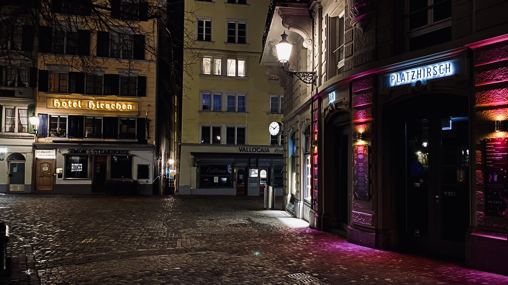
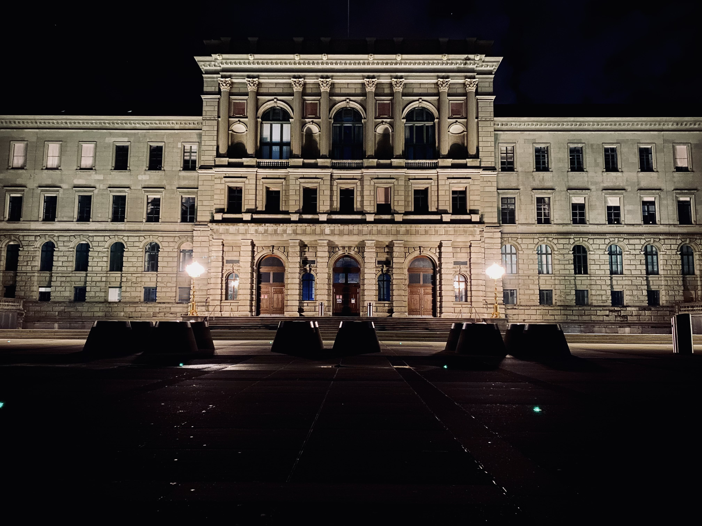
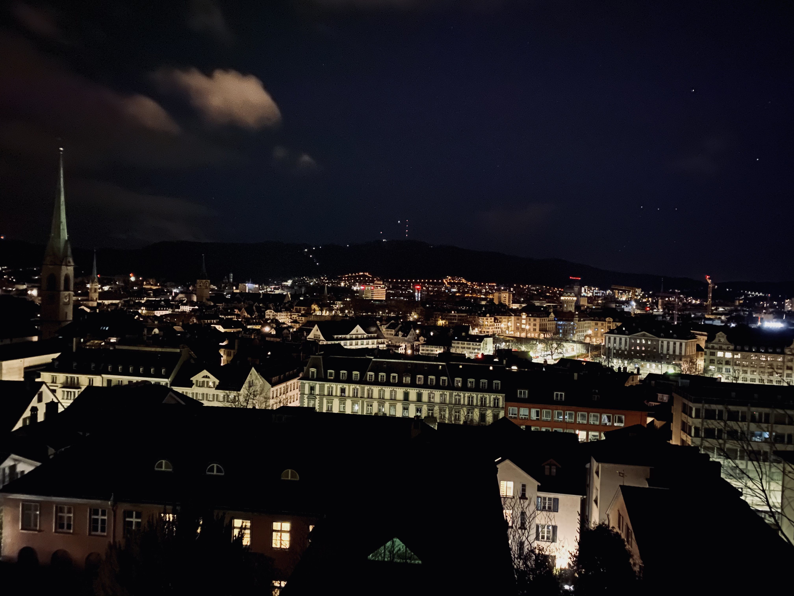
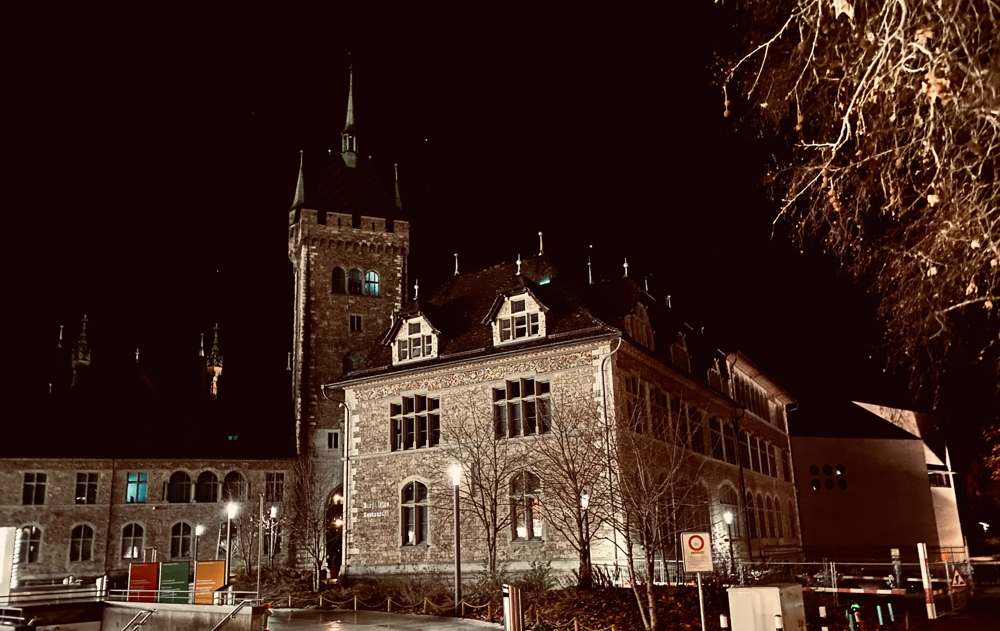

People swim and sail in the lake when the weather allows. There
are even boats that are part of the public transport that
cross the whole lake. The whole trip takes around 2 hours
on a luxurious boat where they serve food and drinks.
(During the first lockdown the levels of heroin in the lake
were 20 times the usual.)
Zürich Opera House

Zürich's is the smallest of the great international opera
houses, which makes the experience of being there even better.
River Limmat

Visible are the two main churches in Zürich--Grossmünster
to the right, Fraumünster to the left. To the left you
can also see the only swimming area where only women are
allowed. Before it was built the women of Zürich bathed
in the city fountains during the night.
Grand Café Odeon

This charming café is not only one of the LGBTQ hotspots of
the city but is also the birthplace of the art movement
Dadaism. James Joyce and Albert Einstein are just a few of
the many celebrities who were regulars there.
Grossmünster

Legend says that the three saints of the church were plunged
into boiling oil and forced to drink molten lead for refusing
to give up their faith. After they were beheaded they then
picked up their heads and went to the place where the church
stands now to dig their own graves and bury themselves.
Fraumünster

In medieval times the women of Fraumünster and especially
the abbess held almost all of the economic and political
power in the region. They collected taxes and decided on
policies and on who the mayor was going to be. Unfortunately,
they lost their power in the 14th century with the rise of
trade guilds that up to this date don’t allow women to enter.
Hotel Hirschen and Platzhirsch Bar

Both places were used by the fighters for the LGBTQ movement
in Zürich during the 20th century. The hotel gave the members
a room to gather and discuss strategies and it also let
homosexual couples rent rooms. For that the city cut off its
electricity. A lot of rich foreigners stayed there at the time
so the hotel staff lit candles and pretended it was just to
bring a better atmosphere.
ETH Zürich

This university is one of the largest in Switzerland. Each year
it hosts a Winter Ball that around ten thousand students
attend. The list of famous individuals who have studied there
includes Albert Einstein and Wilhelm Röntgen, and of course me.
View from University Terrace

I had to include this one, taken from the place where all the
students gather after the lectures to drink a beer, chat or
simply to look at the city.
Swiss National Museum

This seemingly authentic castle was built in the 20th century
to serve as a museum. It has sections that are made to imitate
different architectural styles throughout history. Next to it
is the only park in Zürich that gets locked during the night.
The reason for that is that during the 80s it was occupied by
drug addicts and police couldn’t get in. Now the park is a
popular place to gather and even party.
<-- Prev1Next -->